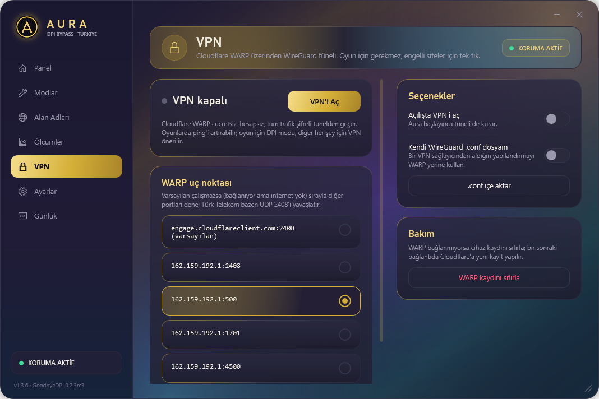

Roblox ve Discord'a takılmadan gir.
Aura, Türkiye'deki erişim engelini aşan ücretsiz bir Windows uygulaması. Kur, düğmeye bas, oyna.
Windows 10 ve 11. 0,9 MB. Hesap istemez.

Ne yapar
Aura, açık kaynaklı GoodbyeDPI motorunu senin yerine yönetir.
- Engeli aşar
- Roblox ve Discord'un 11 sunucusuna erişimi açar. Her birini iki dakikada bir denetler ve durumunu gösterir.
- Resimleri yükler
- Profil fotoğrafları ve oyun görselleri boş kalmaz. Aura resim sunucularını çalışan adreslere yönlendirir.
- Hızı düşürmez
- Yalnızca Roblox ve Discord adreslerine dokunur. Steam, YouTube ve tarayıcı indirmeleri olduğu gibi kalır.
- Ayarı kendi bulur
- Yedi modu senin hattında ikişer kez dener, eksiksiz çalışan en hafifini seçer. Yaklaşık üç dakika sürer.
- Kendini günceller
- Yeni sürüm çıkınca haber verir ve tek tıkla kurar. Bu siteye tekrar gelmen gerekmez.
- VPN de var
- Başka engelli siteler için Cloudflare WARP tüneli. Ücretsizdir, hesap istemez, uygulamanın içinden açılır.


İndirme hızı
Aynı hat, aynı sunucu, tek indirme.
- Koruma kapalı 24,6Mbps
- Klasik GoodbyeDPI, tüm trafik 4,7Mbps
- Aura 24,7Mbps
Türk Telekom, 24 Mbps hat, Cloudflare hız testi. Klasik kurulum her bağlantıya müdahale ettiği için indirmeler yavaşlar. Aura yalnızca listedeki adreslere müdahale eder.
Kurulum
Bir dakikadan kısa sürer.
- İndir ve çalıştır
AuraSetup.exedosyasını aç. Windows "bilinmeyen yayıncı" derse önce "Ek bilgi", sonra "Yine de çalıştır" de. - "Kur" düğmesine basYönetici iznine "Evet" de. Aura kurulur, masaüstüne kısayolu gelir ve kendiliğinden açılır.
- OynaEkranda "KORUMA AKTİF" ve 11/11 yazıyorsa hazırsın. İlk seferde bir kez "Otomatik Optimize" düğmesine bas.
Antivirüs uyarı verirse: Aura'nın kullandığı ağ sürücüsü WinDivert açık kaynaklıdır, ama bazı antivirüsler onu şüpheli sayar. Kurulum klasörünü dışlamalara ekle. Kaspersky ile çalışmaz.
Kurmadan kullanmak için: tam paketi (yaklaşık 60 MB) bir klasöre çıkar ve Aura.exe dosyasını çalıştır. Bilgisayarında .NET 8 varsa küçük paket yeter.
Kaldırmak için: Windows Ayarlar, Uygulamalar, "Aura DPI Bypass", Kaldır. Koruma kapanır ve internet ayarların eski haline döner.
Sorular
Ücretli mi?
Hayır. Aura ücretsizdir, hesap açtırmaz ve reklam göstermez.
IP adresimi gizler mi?
Hayır. Aura engeli aşar ama IP adresini değiştirmez, girdiğin site gerçek adresini görür. Oyunda gecikmenin artmamasının nedeni budur. Adresinin değişmesini istersen uygulamadaki VPN sayfasını kullan.
Windows neden "bilinmeyen yayıncı" diyor?
Kurulum dosyasında ücretli bir dijital imza yok. "Ek bilgi" ve ardından "Yine de çalıştır" diyerek devam edebilirsin.
Hangi internet sağlayıcılarında çalışır?
Türk Telekom hattında geliştirildi ve ölçüldü. Başka sağlayıcılarda "Otomatik Optimize" senin hattına uyan modu arar. Hiçbir mod çalışmazsa uygulama bunu söyler.
Kapatınca internetim bozulur mu?
Hayır. Aura kapanırken yaptığı ayarları geri alır. Bilgisayar aniden kapanırsa ayarlar bir sonraki açılışta düzeltilir.
Sorun yaşarsam ne yapmalıyım?
Uygulamada Günlük sayfasındaki "Tanı raporu kopyala" düğmesine bas. Sistem, bağlantı ve son olaylar tek metin olarak kopyalanır. Sorunu anlatırken onu da gönder.
Kurulum bir dakika sürer.
Aura'yı indir